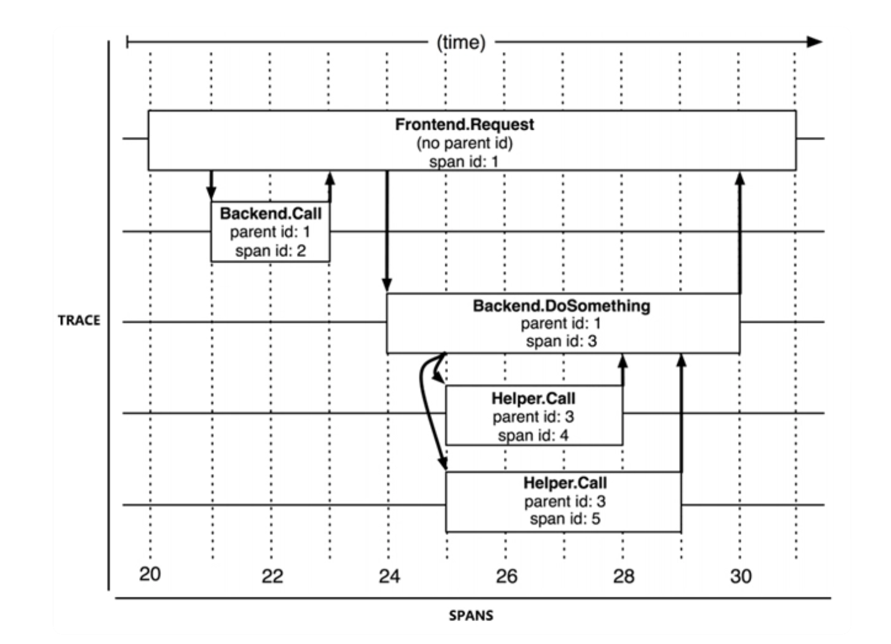

分布式链路追踪系统
一个链路追踪系统最重要的部分就是数据收集系统，然后还搭配着数据存储和数据展示的功能，当然你可以狭义的认为链路追踪系统就是数据收集系统也可以，不过通常一个链路追踪系统或者也叫做 APM 系统 (应用性能管理) 是包含了收集存储和展示的广义分布式链路追踪系统
从客户端的请求到达系统的边界开始，记录该请求流进的每一个服务，直到客户端的响应返回，这就是一个完整的链路追踪 (Trace)。
每次 Trace 都可能会调用数量不同、不同类型的的多个服务，那么为了能够记录具体调用了哪些服务，以及调用的顺序、开始时间、执行时长等信息，每次开始调用服务前，系统都要先埋入一个调用记录，这个记录就叫做一个跨度 (Span)
这是链路追踪最大的两个基本概念 “追踪” “跨度”
一般来说，每一次的 Trace 都是由若干个具有非线性关系且具有嵌套关系的 Span 组成的树状结构，你说有没有是线性关系的 span？应该也有。 
链路追踪的目的主要有两个故障定位和分析性能
只要整理好每一个 trace 中各个 span 的调用关系，响应耗时和响应结果，就能定位出错误和性能。通常我们会绘制出来一个 trace 的 span 拓扑图，比如 go 语言的 pprof (opens new window) 工具就可以绘制出来一个 trace 的 span 拓扑图，这样就能直观的看到整个系统的调用关系，以及每个 span 的耗时，pprof 中的火焰图非常直观的能分析出性能问题。
如果把此次 trace 的数据跟往期对比，大概就能横向对比出整个系统的性能走向了。
trace 在实现上有以下四个难点，或者说必须突破的点：
- 必须低损耗，不能影响业务
- 对应用本身是透明的，不能干涉业务代码，通常链路追踪都是运维在后期加入的，不能直接在业务代码中写进去
- 要求自动扩容，跟随应用的扩容而扩容
- 持续监控，要求 24 小时不间断的监控整个系统。
链路追踪数据收集的三种方法
基于日志的追踪
基本原理就是将 trace 和 span 的内容直接记录在日志中，然后跟随所有节点的内容汇集分析，从全文日志中去分析出 trace 的拓扑图和各种信息，好处就是对于对网络消息完全没有侵入性，对应用程序只有很少量的侵入性，对性能的影响也非常低，坏处就是日志系统本身并不要求绝对的连续性和完整性以及一致性，实时性，所以可能造成追踪丢失的情况，小公司或者小项目可以使用这种方式，大公司或者大项目不推荐使用这种方式。
如果要使用这种方案，elastic stack 是一个不错的选择，因为 elastic stack 已经集成了日志收集和日志分析，所以只需要把日志收集到 elastic stack 中，然后就可以分析出整个系统的调用关系，以及每个 span 的耗时。
基于服务的追踪
通过某些手段给目标应用注入追踪探针，是基于服务的追踪的基本原理。
探针是一个寄生于服务上的一个独立系统，通常是一个小型分布式服务，它有自己的注册中心，心跳检测等系统，它可以从目标系统中监控得到的服务调用信息，通过另一次独立的 HTTP 或者 RPC 请求，发送给追踪系统，所以这种方法的侵入性较强同时消耗资源也大，但优点也是好的很啊，它可以从应用最底层去监控整个系统，而且监控的实时性，完整性，精度都非常的高，并且跟日志系统完全不牵涉，所以适合于大型分布式系统。
比如 Jaeger (opens new window) 就是一个基于服务的追踪系统，它可以通过注入探针的方式，监控整个系统的调用关系，以及每个 span 的耗时。
基于服务网格中边车代理的追踪
我们在使用服务网格的时候，通常会为每个服务都部署一个边车代理，边车代理是一个轻量级的服务，它负责拦截请求，记录请求的追踪信息，然后将追踪信息发送给追踪系统。
它也有自己独立的数据通道，追踪数据通过控制平面进行上报，避免了追踪对程序通信或者日志归集的依赖和干扰，保证了最佳的精确性。
所以这种方式也是基于服务的追踪的基本原理，但是它不需要在目标服务中注入探针，所以侵入性低，消耗资源低，但是它需要部署边车代理，并且无法监控本地应用级的的调用关系，仅仅可以监控服务级别的调用关系。
通常我们使用 istio 服务网格跟 Jaeger 结合使用，istio 会自动为每个服务部署边车代理，然后 Jaeger 就可以通过边车代理监控整个系统的调用关系，以及每个 span 的耗时。相当于 Jaeger 不用直接埋点到服务中，直接接入 istio 的控制系统就可以了，如果要持久化存储，那么就需要部署一个 Jaeger 的存储组件，比如 ElasticSearch。然后还可以通过 kibana 去展示存储在 elasticsearch 中的数据。
为什么 Istio 需要与 Jaeger 集成？
服务网格的透明化追踪需求 Istio 通过 Envoy Sidecar 代理自动拦截服务间通信，但需要追踪系统 (如 Jaeger) 将分散的调用信息整合为完整的请求链路图。
跨服务上下文传递 Istio 自动注入和传播追踪 Header (如 x-b3-traceid)，而 Jaeger 负责解析这些上下文，还原跨服务、跨集群的调用路径。
性能优化与故障排查 Jaeger 的甘特图可视化能力可清晰展示每个微服务的耗时 (Span)，帮助识别高延迟服务或异常重试。
运行流程如下
- Envoy Sidecar：拦截流量，生成初始 Span 并透传 TraceID
- Jaeger Agent：以 DaemonSet 形式运行于每个节点，收集 Sidecar 的 Span 数据
- Jaeger Collector：聚合数据并存储至后端 (如 Elasticsearch)
- Jaeger UI：提供可视化查询界面，展示链路图、甘特图等
链路追踪系统架构的规范化设计
比如该怎样进行埋点、Span 上下文具体该有什么数据结构、怎样设计追踪系统与探针或者界面端的 API 接口等等，这些都是需要规范化的设计的。